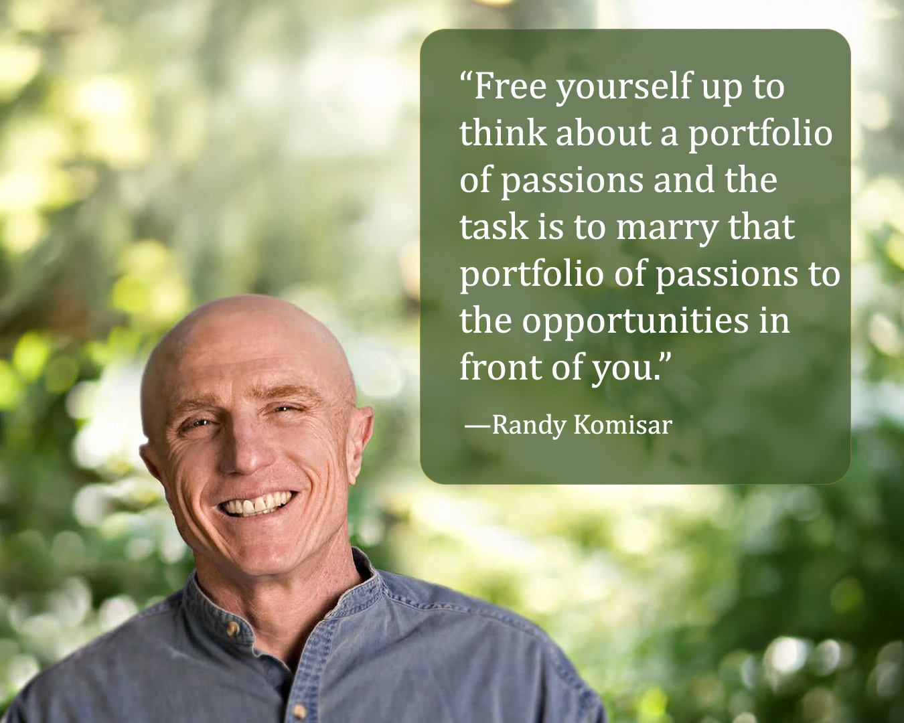
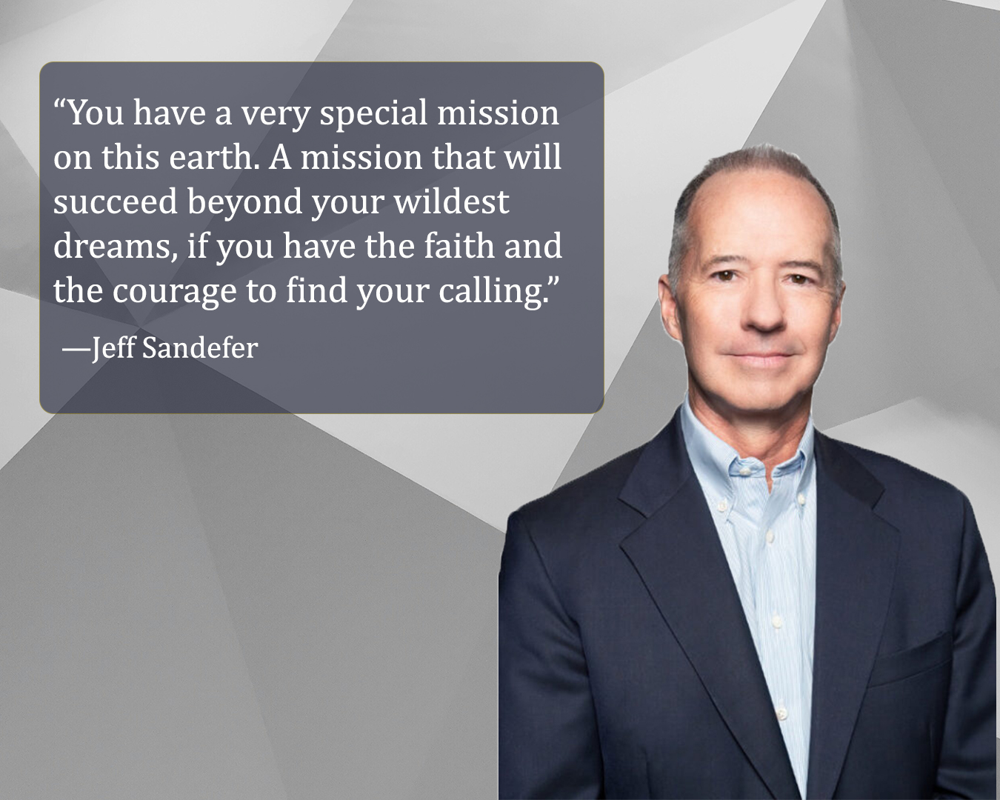

Week 05 Journal Entry
How Do You Find Your Passion and How Do You Pursue It?
This week I started by watching the message How Do You Find Your Passion and How Do You Pursue It? by Randy Komisar, and it brought a new perspective to the way I think about passion and decision-making. Instead of feeling pressured to find one single passion or a final life goal, he explains that it is more helpful to think of our interests as a portfolio of passions that can connect with the opportunities in front of us. He also emphasizes the importance of focusing on direction and values rather than a fixed destination, which helped me realize that it is okay not to have everything figured out right away. This message encouraged me to focus on present opportunities, trust the process, and move forward even when I am choosing between good options, rather than waiting for a perfect answer.
Most Entrepreneurs are Not Rock Stars

I thought the message in this video was very realistic. It made me realize that if your main motivation for becoming an entrepreneur is financial reward, then a startup might not be the right path. The odds of achieving massive success are very low, and the process can be long, uncertain, and challenging. In many cases, you could earn more and have more stability working in an established company while still having the opportunity to make an impact.
What stood out to me the most is that true success is not about money or recognition. It is about choosing a path that aligns with who you are and what you value. This video reminded me to reflect on my own goals and motivations and to focus on making intentional choices that lead to meaningful work rather than chasing wealth alone.
A Hero's Journey
While listening to A Hero’s Journey, I noticed that the speaker’s name was not mentioned in the video. Because the message felt so meaningful, I took a moment to do a little research and learned that the speaker was Jeff Sandefer. His talk had so much value, and it was filled with important lessons that truly stood out to me. What stood out to me the most were his ideas about purpose and meaning. He reminded us that we all have a special mission on this earth, one that can succeed beyond our wildest dreams if we have the courage to find our calling. Choosing a hero’s journey, as he said, means living each moment like it matters, seeing struggles as opportunities, and valuing how we grow along the way, not just the prize at the end.
I also loved the three promises he talks about at Acton: learning how to learn, learning how to make money, and learning how to live a life of meaning. While making money is important, the lessons about learning and living a meaningful life are what really stay with us. At the end of life, he says only three questions matter. Did I contribute something meaningful? Was I a good person? And who did I love and who loved me? Everything else, money, power, and fame, fades away. One exercise that really resonated with me was his suggestion to ask five people what you do better than anyone else. It is amazing how often the things that feel easy to us are actually our greatest gifts. Using those gifts to bring joy and help others is at the heart of finding a calling.
I also loved the idea of writing a letter to your future self as a kind of moral guide and a reminder to choose the people we spend our time carefully, because they shape who we become. One of my favorite lessons was the gratitude letter. Taking a moment to write to someone I am truly grateful for and reading it aloud is a powerful way to feel more connected and appreciative. This talk reminded me that the hero’s journey is both personal and bigger than ourselves. It is about using our talents to make a difference while growing into better, more compassionate people along the way.
Spreading Happiness Case
I really enjoyed working on the Spreading Happiness: Warm Fuzz Cards case. As a graphic designer who loves making handmade cards, I felt an immediate connection with Erica Mills and her business. I loved how her cards are meant to brighten someone’s day for no special reason, not just for birthdays or holidays, and it reminded me that creating something thoughtful can truly make people feel cared for. I also enjoyed seeing how Erica taught herself the skills she needed to make her business work, showing that you can figure things out along the way if you are willing to learn. Writing an essay about her story was a lot of fun and helped me think more deeply about how creativity and business can come together. I found Erica’s approach to growth especially interesting. She chose to grow slowly so she could maintain high quality and focus on what mattered in her life, which made me think about how I could balance my own creative projects with other responsibilities. At the same time, the case made me wonder what it would look like if she decided to grow faster, and I realized that no matter the pace, thoughtful planning, listening to feedback, and staying true to your values are what make a business meaningful and sustainable.
Life Plan Personal Board of Advisors
I had the opportunity to think about the great people who have influenced my life and the way I make decisions. Only Vishen Lakhiani and Dr. Ana Beatriz Barbosa are still alive, but the others, Gordon B. Hinckley, my mother, Paul Rand, Truett Cathy, and of course my Savior Jesus Christ, have had a profound impact on me. Each of them has shaped who I want to become in unique ways.
Gordon B. Hinckley inspired me with his leadership and ability to motivate others, especially youth, to reach their potential. My Savior Jesus Christ continues to guide me through His perfect example of love, service, and integrity. My mother, Deusa Gois, strengthened me with her unwavering support and love, always encouraging me even when I doubted myself. Dr. Ana Beatriz Barbosa’s wisdom, compassion, and humanity are qualities I hope to cultivate in my own life. Paul Rand taught me the power of creativity and vision, showing me how design can transform the way people see the world. Truett Cathy showed me how faith and perseverance can guide a successful life, and Vishen Lakhiani’s insights on personal growth and mindset motivate me to keep learning and improving every day. Reflecting on their influence reminds me how much guidance, inspiration, and example matter. I feel grateful for the lessons they have given me and hope to carry their wisdom forward in my own life.
Mastery Book Reading
I also started reading the book Mastery this week and have only read a few chapters, but it already made me think differently about learning and growth. The book emphasizes that real progress takes time and there are no shortcuts. It reminded me to be patient with myself and trust the process, even when things feel slow. I am excited to keep reading and see what other lessons I can apply to my life and goals.
Week 05 Reflection
This week reminded me that growth and learning are journeys, not destinations. The people I admire, the lessons I am discovering, and the experiences I am living all inspire me to keep improving, trust the process, and focus on what truly matters. I feel grateful for these insights and excited to see how they will shape the person I am becoming.